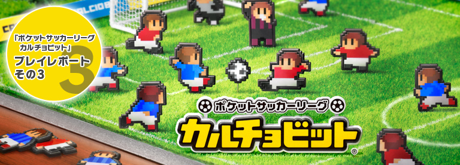
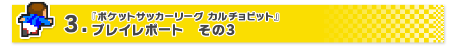
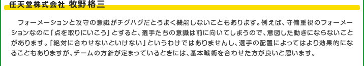
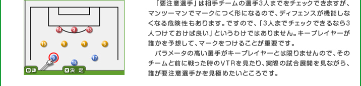
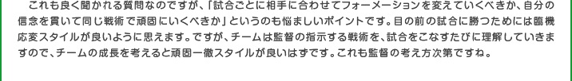
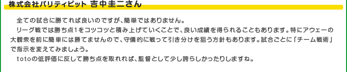

『ポケットサッカーリーグ カルチョビット』で一番迷うのは、試合中の戦術の選択です。どんなフォーメーションがいいのか、ゾーンの高さや幅はどうすればいいのか、などなど、監督としての悩みは絶えません。
筆者が一週間ほどプレイしてみて感じたのは、「正解はない」ということです。もちろん、守備的な相手に対してゾーンの高さを思い切り上げて、攻撃の枚数が多い4-3-3のフォーメーションにするとうまくいった、といったことはありました。しかし、これはあくまで選手の育成状況や、相手次第の側面もあります。
基本的には、攻撃と守備のバランスを意識しながら、フォーメーションとゾーンの高さと幅を決めていました。以下の3つのことを念頭に置くと、バランスを取りやすくなるかもしれません。

この3つは、実際のサッカーでも同じです。ややこしいかもしれませんが、要するに、攻撃を強くすれば守備が手薄になり、守備を強くすればその逆になる、ということです。
最初のうちは、ベーシックな4-4-2のフォーメーションで固定してしまっても大きな問題はありません。少しずつフォーメーションやゾーンをいじりながら、自分のチームにとってベストな戦術を探していけば良いでしょう。
『ポケットサッカーリーグ カルチョビット』では、本当に多彩な戦術が可能です。サッカーファンの方なら、日本代表の4-2-3-1や、ひいきのチームのフォーメーションを試してみるだけでもワクワクできるはずです。選手の登録名も変えられるので、好きな選手に似た顔の選手の名前を変えてポジションを合わせるだけでも思い入れが増すでしょう。
また、ゲーム内では女子選手もたくさん登場するので、女性だけのオリジナル「なでしこ○○」を作り上げることも可能です。チーム作りはプレイヤーのあなた次第。とにかく自由なのです。みなさんも強くて面白いサッカーを展開するチームを作って、リーグ戦の制覇とカップ戦での優勝を目指してみてください。





